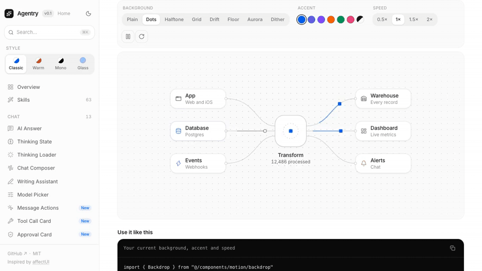
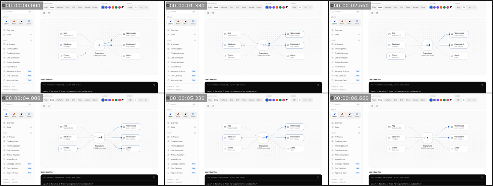

Output


Result
Delivered video-2-slack.gif: 960x540, 96 frames at 12 fps (delays alternate 80/90 ms, total exactly 8.0 s), infinite loop, 1.12 MB (limit 2 MB), palette-optimised with the skill's own export.py gif preset.
What the skill changed: it routes this request to a script (export.py --preset gif, plus fit.py --width for size) instead of a hand-written ffmpeg command, and it requires probe first and look.py after. Using only its documented flags the GIF could be enlarged from the preset's 480 px to 960 px (fit.py --width 960, then export.py --no-scale) without leaving the skill.
Trade-offs: 12 fps is fixed by the preset (no flag to change it), so motion is limited to 12 fps; the preset uses one palette for the whole clip. Nothing could not run.
Terminal
# Skill step 1: plan from probe numbers.
python3 scripts/probe.py fixtures/video/clip.mp4
duration 8.0, h264 High, 1280x720, 30 fps, variable_frame_rate_suspected false, no audio, 292,987 B
# The skill's own GIF preset: 480 px wide, 12 fps, palette-optimised.
python3 scripts/export.py clip.mp4 --preset gif -o clip_gif_default.gif --dry-run --json-brief
[dry-run] ffmpeg ... -filter_complex '[0:v]fps=12,scale=480:-2,split[a][b];[a]palettegen=stats_mode=diff[p];[b][p]paletteuse=dither=bayer:bayer_scale=5:diff_mode=rectangle' -loop 0 clip_gif_default.gif
# Works, but 480 px wide makes the UI's small labels hard to read, and ~1.7 MB of the 2 MB budget is unused.
python3 scripts/export.py clip.mp4 --preset gif -o clip_gif_default.gif --json-brief
"verified": true, "summary": { "duration_s": 8.0, "width": 480, "height": 270, "fps": 12.5 }
clip_gif_default.gif = 326,283 B
# The export preset only knows 480 px; the documented way around it is fit.py --width then export.py --no-scale.
python3 scripts/fit.py clip.mp4 --width 800 -o clip_800.mp4 && python3 scripts/export.py clip_800.mp4 --preset gif --no-scale -o clip_800.gif
800x450 @12.5 fps: 921,223 B
# Largest size that stays comfortably under 2 MB; delivered.
python3 scripts/fit.py clip.mp4 --width 960 -o clip_960.mp4 && python3 scripts/export.py clip_960.mp4 --preset gif --no-scale -o clip_960.gif
960x540 @12.5 fps: 1,173,118 B (1.12 MB)
# Viewed: node labels and sidebar text are legible.
python3 scripts/look.py clip_960.gif --tiles 3x2 -o clip_960_sheet.png
contact sheet: 6 frames every 1.33s
wrote clip_960_sheet.png
# export.py alternates 80/90 ms delays to hit 12 fps on average, so playback is exactly real-time (no speed-up) and the GIF loops forever.
python3 scripts/probe.py clip_960.gif; python3 -c "PIL: per-frame durations"
gif 960x540, nb_frames 96, duration 8.0, size_bytes 1173118
96 frames, frame delays {80, 90} ms -> total 8.0 s, loop 0